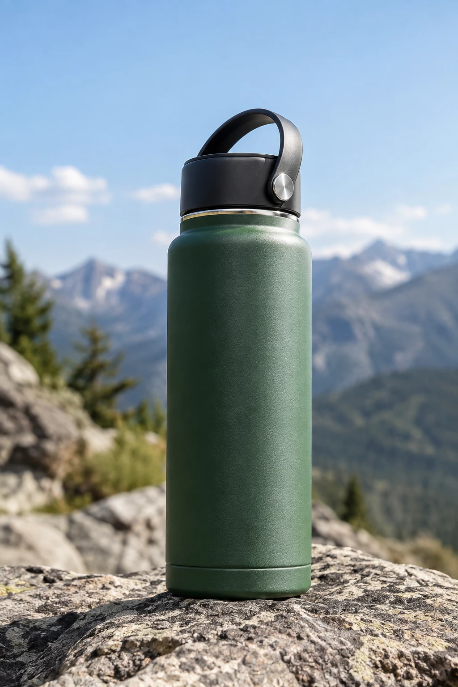
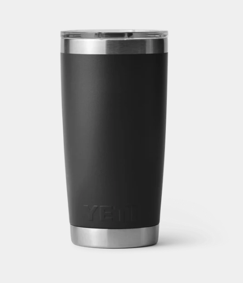
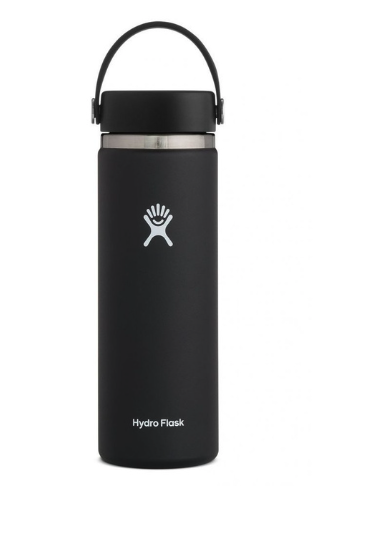
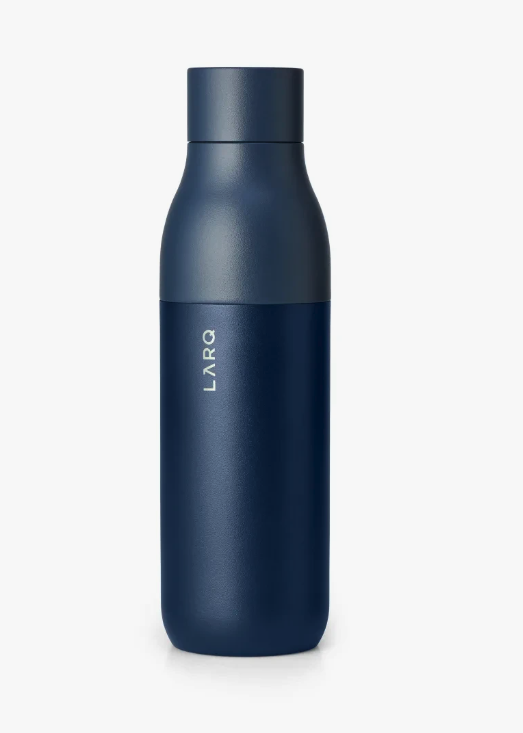

Halden Trail 32 oz
not mentioned
not mentioned
best insulated water bottle for hiking under $50?

1. YETI Rambler 20 oz Tumbler
Keeps drinks cold all day.
Keeps drinks cold all day.

2. Hydro Flask Wide Mouth
Light, easy to clean.
Light, easy to clean.

3. LARQ Bottle PureVis
Self-cleaning cap.
Self-cleaning cap.
Visibility
18%
Avg position
3.4
Share of voice
6.2%
Competing
41
Visibility over time
● Halden Trail● YETI Rambler● Hydro Flask